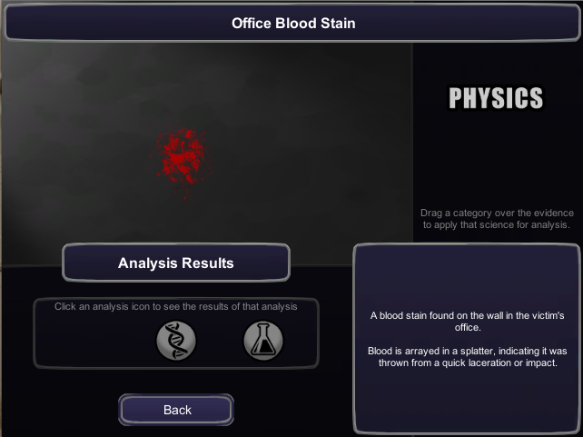

About
In college I have worked on developing several games for both pleasure and school projects. I've participated in the Global Game Jam since 2011. Our 2011 game Baby Mammoth's Journey to Mars is available on XBOX live indie arcade. I have also particpated in Microsoft's Imagine Cup, where we received honorable mention for our game Heroine.
Xbox
Bear Fight: Teddy Edition(2012)
Bear Fight: Teddy Edition was a 4-player game created by Team Slashstar for the XBOX 360 in January 2012 during the 48hr Global Game Jam. Bear Fight is a game targeted at younger girls, where teddy bears have a pillow fight and can get power ups.
Game Play:
Developers:
Evie Powell – Producer, Voice Acting
Veronica Catete – Lead Programmer, Voice Acting
Rachel Brinkman – Programmer, Voice Acting
Behrooz Mostafavi – Music & Sound Engineering, Voice Acting
Sumaiyah Dailey - Art & Design
Production Year: January 2012
Kawaii Sports (2011)
Created for Dream.Build.Play, You control a team of tiny woodland creatures engaging in some good natured competitive sports play. The little "kawaii" aminals will play anything from soccer to tennis to basket ball. Theres just one problem. Usually the ball is as big as they are... so they'll have to adapt.
Screen Shots:


Developers:
Evie Powell – Lead Programmer, AI, Music & Sounds
Veronica Catete – Programmer, Special FX, 3D Level & Asset Creation
Richard Suarez – Character Art
Christina Richardson - Graphics
Production Year: Summer 2011
Baby Mammoths Journey to Mars (2011)
Baby Mammoth’s Journey to Mars was a game created for the XBOX 360 in January 2011 during the 48hr Global Game Jam. The game was created by Team Slashstar, and has since been polished and published to XBOX Live Indie Arcade! Baby Mammoth's Journey to Mars is a 2-D Side Scrolling Platform Game. Save Baby Mammoth from Extinction! The Ice Age is coming and is freezing everything! Help Baby Mammoth escape by jumping over cliffs, bashing through trees and dodging hungry buzzards!
Screen Shots:

Developers:
Evie Powell – Programmer, Music & Sounds
Veronica Catete – Level Design, AI Programmer
Thomas Phifer – Art Transfer
Richard Suarez – Artist
Production Year: January 2011
Download: XBOX Live Indie Arcade, $1
Heroine (2010)
Heroine was a game created by Team Slashstay for Imagine Cup 2011, to promote gender equality through stories of powerful women in history experienced through gameplay; it placed Honorable Mention. Heroine is a fighter game that stars famous women from history who broke boundaries and overcame adversity, with characters such as Joan of Arc, Marie Curie, Hatshepsut, Harriet Tubman, Grace Hopper, and even Elizabeth Bathorie.
Screen Shots:


Developers:
Evie Powell – Lead Programmer, Music & Sounds
Veronica Catete – Level Design, AI Programming
Thomas Phifer – Programmer
Christie Thornton – Art & Design
Dylan Banks - Character Art
Production Year: October 2010 - March 2011
Video:
Unity
CSI Adventure (2013)
CSI Adventure is a first person forensics game where players navigate various crime scences, collecting evidence along the way. Once the player has collected enough evidence they can head back towards the lab where they analyze evidence using realistic techniques. The goal of this game is to engage players and raise their interest in STEM majors. This game was developed for Shaw University, an HBCU under an STEM Infusion NSF grant.
Screen Shots:


Developers:
Veronica Catete – Lead Designer, Producer
Aaron Quidley – Programmer, Modeling
Production Year: Summer 2013
Legend of the Hidden Elements (2013)
This game is based off of the North Carolina curriculm for Chemistry. It covers sections related to periodic trends. Students play as hero Ionic Bond, and must recuse elements from ChemiKal Island before evil villain Thorium destroys them. This game is similar to Pokemon, in that players collect the elements in their natural state, and engage in battles. Additional players have access to a PeriTab or Periodic Tablet, that stores data about the collected elements.
Screen Shot:

Developers:
Veronica Catete – Team Lead, Level Design, Lead Programmer
Ashley Disque – Programmer, Asset Acquisition
Ben Fitzgerald– Asset Acquisition, Mini-Game Programmer
Production Year: Spring 2013
BOTS (2010)
Over the summer our team started the development of BOTS, a game-based environment in which programming changes can be easily deployed, presented, and evaluated. We combined design ideas from MITs Scratch and Amour Games' Light Bot to make programming more approachable for novices by eliminating syntax errors and providing immidiate feedback. Our game used concepts like loops, variables, and functions to teach novel programming.
Screen Shot:

Programming Area

World Mode
Play Now: Play the latest version at bots.game2learn.com
Developers:
Veronica Catete – Team Lead, Lead Programmer, Puzzle Interpreter
Joshua Stituka – Programmer, Level Importer
Production Year: Summer 2010
Mobile
Audio Yo! (2012)
Not a game but still fun, is the Audio Yo! voice-activated media player for Android devices.
Developers:
Katie Doran – Lead Designer
Veronica Catete – Lead Programmer
Rachel Brinkman – Programmer
Video:
Technology that Enhances Learning (2013)
Again, not a game but rather a website that explains the different Technology/Game-based learning applications that enhance learning, built as a project for Adv. Educational Psychology.
Developers:
Veronica Catete – All
Link:
EDP-504 Website